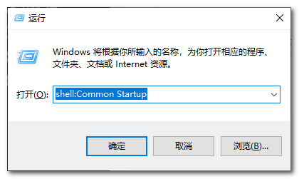
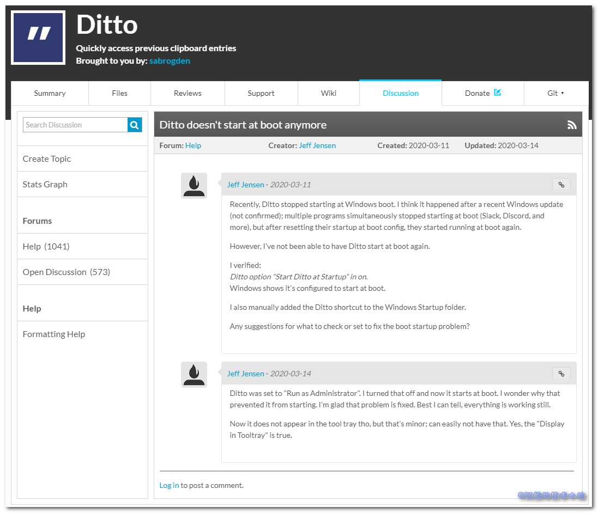
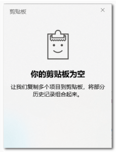
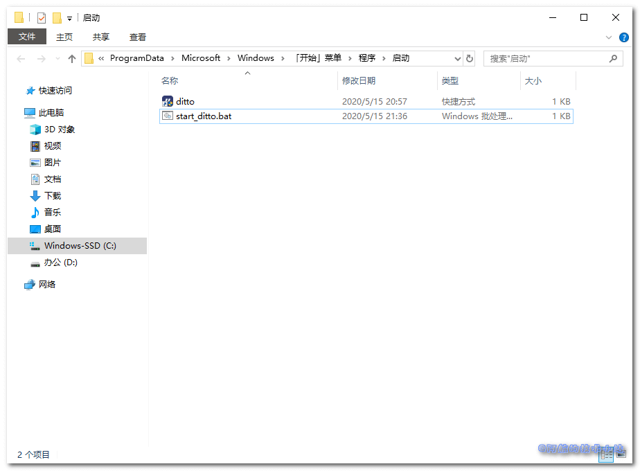

近些年一直在使用Ditto作为剪贴板增强工具, 但是突然有一天Ditto无法开机自启了! 自己设置了N次, 还是不行! 但是开动脑筋想了一阵子, 一次又一次的尝试, 终于成功了!
尝试过的方法
在Ditto软件中设置系统自启动
-
以管理员身份运行Ditto
-
勾选"系统启动时运行"
[caption id=“attachment_1213” align=“aligncenter” width=“701”]
 勾选"系统启动时运行"[/caption]
勾选"系统启动时运行"[/caption]
如果你通过这样设置可以成功, 那么恭喜你🎉🎉.
但是我这样没成功, 开机并没有自启动, 点击快捷键也没有反应.
添加Ditto至Windows的"启动"目录
- 复制
Ditto的快捷方式 Win+R打开"运行"- 输入
shell:Common Startup:  - 点击确定, 打开"启动"目录, 粘贴
Ditto的快捷方式.
如果你通过这样设置可以成功, 那么恭喜你🎉🎉.
我同样死在了这一步. 重启后依然失败.
个人猜想
查询的过程
在网上冲浪的过程中, 并没有发现别人反馈类似的问题(可能是因为这个软件比较冷门)😑.
越过大墙, 发现真的有人反馈 :

Win10 自带的剪贴板增强软件
无意中发现可以按快捷键Win+V唤起剪贴板:

这个自带的软件蛮简洁的, 喜欢的同学可以直接使用. (功能较少, 只有粘贴, 没有搜索)
Win10故意屏蔽Ditto?
也许是微软看到Ditto的功能相当不错, 所以自己加了上面说的剪贴板工具. 为了将Ditto的用户引流过来, 故意屏蔽了Ditto.
以上纯属个人阴谋论、瞎猜, 请勿当真😏😏
终极解决方案
人之所以被称为万物之灵, 是因为人的智慧是无穷无尽的. 这一点在程序员身上提现的淋漓尽致. 那么, 现在就开始吧!
创建命令行文件
创建文件start_ditto.bat(名称随意, 后缀不能变)
使用记事本打开, 编辑. 输入以下内容:
start "" "D:\Program Files\Ditto\Ditto.exe"
后面的D:\Program Files\Ditto\Ditto.exe替换为你自己的Ditto安装路径!
移动文件至"启动"目录
将文件移动至上面的"启动"目录: 
搞定!
这样做, 天王老子来了也管不了你开机启动Ditto!
小小微软就想限制我们, 没门! (谁有空帮我把天上的牛拽下来🤣🤣)
感谢
Pexels 上的 Giftpundits.com 拍摄的照片
结语
若对本文有任何问题, 欢迎在下方评论区评论!